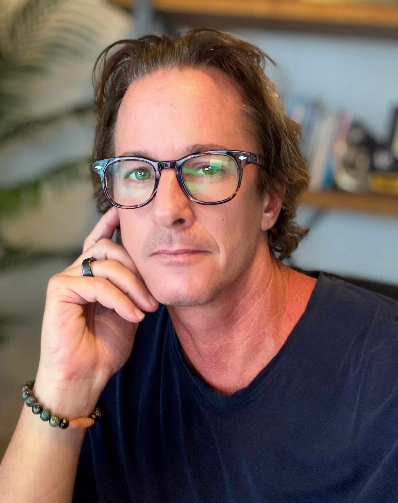

Saunter applies failure analysis, the systems-engineering discipline used where failure is not survivable, to the businesses and leaders scaling under load. It is built by an operator who spent a career finding the failure mode before it became a catastrophe, then built and sold a company on that same rigor.

"Ambition without architecture does not just stall a company. It creates exposure."
Ryan "Gus" Roberts · Founder
Air Force fighter pilot and strategy officer, then a decade-plus modeling failure for the Department of Defense. Then he built and sold a defense firm. Same discipline, different arena.
In those worlds a missed failure mode is not a bad quarter, it is a catastrophe. Saunter turns that rigor onto the businesses and leaders scaling under load, where the failure modes are quieter but the exposure is just as real.
Two decades flying combat aircraft, serving as a senior strategy officer, and commanding an air-to-ground range and airfield.
Led teams synthesizing failure-mode data across complex defense systems with large contractors and weapons manufacturers.
Founded, scaled, and exited a defense-technology company.
Systems engineering, organizational diagnosis, and behavioral science, combined into one repeatable method.
The Business Assessment and Leadership DNA are built so the diagnosis does not live in one person's head. A trained team can run the work to the same standard every time, so no matter who brings you in, you get the same rigor.
Ryan spent two decades in the Air Force as a fighter pilot and senior strategy officer, commanding an air-to-ground range and airfield, and leading teams that synthesized failure-mode data across complex defense systems for large contractors and weapons manufacturers. He founded, scaled, and exited a defense-technology company. Saunter is where that failure-analysis discipline meets the businesses and leaders scaling under load. He sets the method and leads the highest-stakes engagements.
Jen advises leadership teams in the middle of consequential change, when priorities are unclear, trade-offs keep getting deferred, and performance and trust start to erode. She has done this across healthcare, franchise, retail, and the public sector, working at the intersection of strategy, technology, and people, increasingly around how teams adopt AI without losing the plot. One of Saunter's two full Saunter Certified Practitioners, she is trained on the whole system. Drawing on a career leading business transformations and running teams herself, she also leads how Saunter goes to market, getting the method to the operators who need it.
Chris has spent his career inside growing organizations, focused on where the operating model falls behind the business: the same conversations resurfacing, decisions slowing down, leaders buried in detail they used to delegate. He advises on the process and cadence that close that gap. One of Saunter's two full Saunter Certified Practitioners, trained on the whole system, he actively delivers the work and is training to run engagements end to end. A doctoral candidate whose research applies the framework, Chris brings that same rigor to how the method develops. He holds an MBA from the University of Denver and a PMP, and also serves on Saunter's Technical Advisory Board, helping calibrate the scoring rubrics and keep the methodology honest.
Behind the core team is a wider bench. Saunter's credential runs in two tiers: full Saunter Certified Practitioners who run the whole system, and LDNA Certified Practitioners who deliver the leadership work, including those at our delivery partner Vertical Motion. When an engagement calls for a seasoned operator who has sat in the chair, for a fractional or advisory mandate, we match from that bench. It extends the reach without diluting the method. See the practitioner network →
The technical board reviews and analyzes the methodology, scoring rubrics, and peer review. They do not take client calls. They make sure the science holds.
Retired senior officer. TOPGUN-graduate fighter pilot. Doctorate in aviation. Global cargo-airline check airman. CEO of government-contracting and concierge-healthcare companies.
Aviation · National securityMulti-time public-company CFO and COO. Former Marine Corps officer. Currently leads finance for a global aviation-leasing platform measured in the billions.
Public company · FinanceDoD and Intelligence Community veteran. Two-time VC-backed founder. More than $1.5B in closed enterprise contracts. Runs an executive leadership-development firm.
DoD · Enterprise salesThe Free Business Assessment takes under 8 minutes and gives you the single thing to fix first.